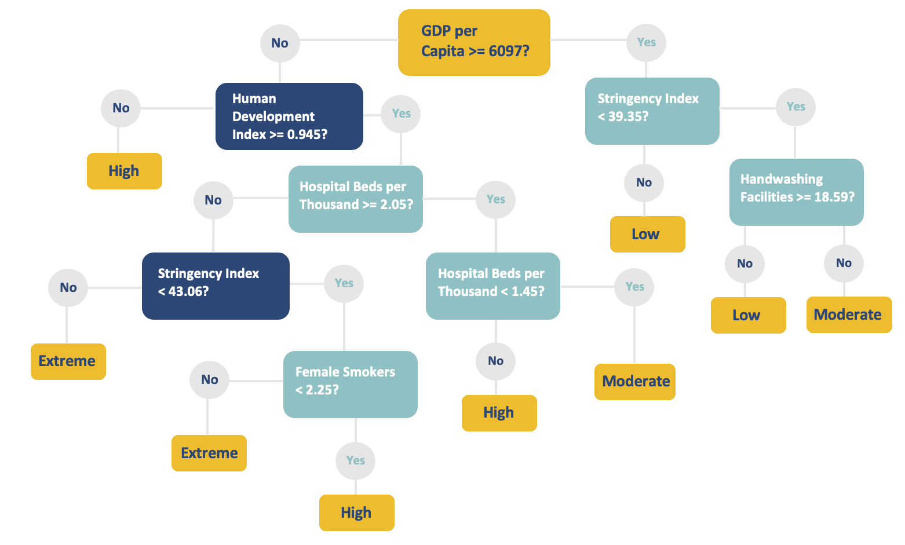

COVID+
COVID+
Since Covid-19 has been around for a while now, the question that we would want to properly investigate is the type of factors that influence the rate of transmission and death of Covid-19 or any pandemic for that matter.
By roughly knowing this information, the world can prepare themselves for inevitable future pandemics by identifying the type of areas each country would want to put their focus and improve on. With factors such as the amount of hospital beds within a country to the "Stringency index" where it represents how strict an overall country is based on containment and closure policies. Thus, we cannot eliminate pandemics, but we can lessen the impact by a considerable amount.
Note:
- This is a general guideline, as there are some cases such as United States that act differently to a pandemic compared to the average country.

(Cases per Million)
Low = 0 - 1.832
Moderate = 1.832 - 52.291
High = 52.291 - 202.774
Extreme = 202.774 - 499.479
GDP per Capita: Gross domestic product at purchasing power parity
Human Development Index: A composite index measuring average achievement in three basic dimensions of human development - a long and healthy life, knowledge and a decent standard of living.
Stringency Index: Government Response, composite measure based on 9 response indicators including school closures, workplace closures, and travel bans, rescaled to a value from 0 to 100 (100 = strictest response).
Hospital Beds per Thousand: Hospital beds per 1,000 people.
Handwashing Facilities: Share of hte population with basic handwashing faciltiies on premises.
Female Smokers: Share of women who smoke.
(Deaths per Million)
Moderate = 0 - 0.488
High = 0.488 - 2.6555
Extreme = 2.6555 - 6.539
Human Development Index: A composite index measuring average achievement in three basic dimensions of human development - a long and healthy life, knowledge and a decent standard of living.
Life Expectancy: Life expectancy at birth.
Hospital Beds per Thousand: Hospital beds per 1,000 people.
Male Smokers: Share of men who smoke.